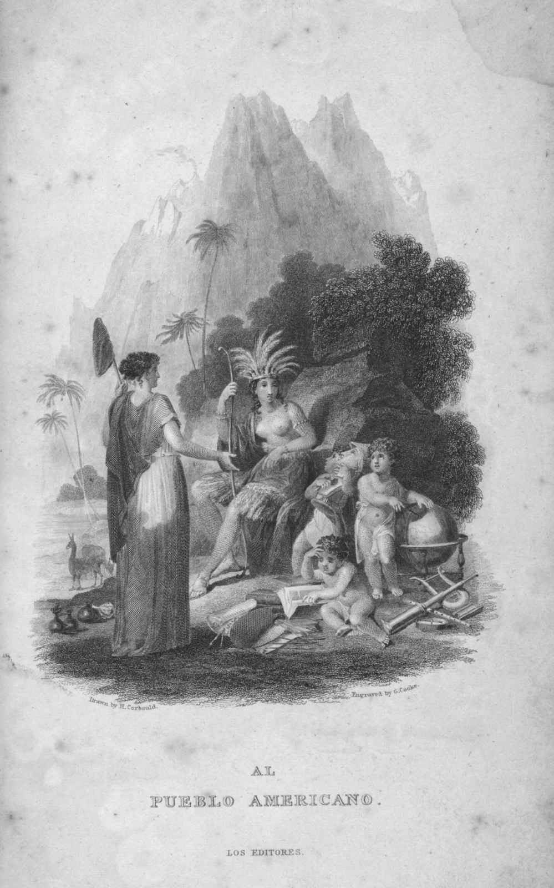
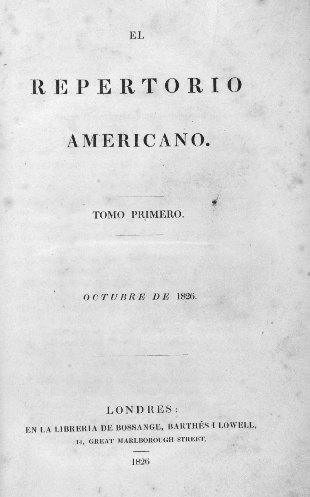
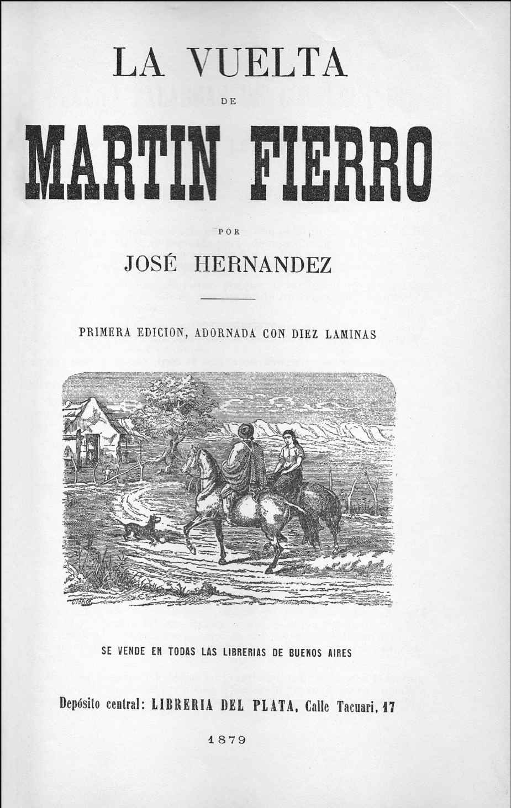

人类艺术感知力的细微提升，总是最先在诗歌中迸发光芒：19世纪初拉丁美洲文学创作的新风向，便最先体现在诗歌这一体裁中。最初表现出转变的诗人尚未脱离新古典主义风格的影响，这并不利于充分引介这一“新世界”；他们所采用的韵律格式和引喻手法承袭自古希腊和古罗马，依然与18世纪的欧洲诗歌（尤其是西班牙诗歌）一脉相承。
纵观19世纪，拉丁美洲的诗歌一直试图摆脱基于欧洲传统现实和思维模式的语言风格，找到某种真正属于自己的表达方式。这一努力往往与争斗相关，首先是脱离西班牙的战争，然后是与各地区地理和人口特征相适应的国家和大陆政府形式的探索之争。
厄瓜多尔诗人何塞·华金·奥尔梅多（1790—1847）以创作赞颂独立战争的诗篇闻名。他最著名的诗作（定本出版于1826年）赞颂了解放者西蒙·玻利瓦尔及其在秘鲁胡宁区大败西班牙人的光荣事迹。这是一部史诗级的作品，名为《胡宁大捷：玻利瓦尔之歌》。全诗沿用新古典主义的创作手法，时间跨度从前哥伦布时期到胡宁战役，实可谓鸿篇巨制。
这首诗的创作受命于玻利瓦尔本人，附带的条件是“不出现他本人的事迹”——这自然是无法做到的。通过对罗马诗风（特别是维吉尔）的模仿，奥尔梅多聚焦于对解放者英勇形象的书写，他认为玻利瓦尔建立统一新大国“大哥伦比亚”（包括今天的委内瑞拉、巴拿马、哥伦比亚、秘鲁、玻利维亚和智利）的宏大构想，足以与《埃涅阿斯纪》中所歌颂的罗马的建立相媲美。战争的恢宏场面通过响亮的头韵和大量的拟声词得到展现，战争的崇高通过类比西方古典神话得到强化；很显然，作者试图将胡宁大捷这一美洲事件置于西方文明历史的核心位置。然而，迫于现实历史事件的压力，作家在创作中进行了一处最大胆的转折处理。
胡宁战役打响于1824年8月6日，由玻利瓦尔领军指挥。但实际上，真正将西班牙人彻底逐出南美洲大陆的决定性战役——阿亚库乔（秘鲁）战役，发生于同年的12月9日。后一场战役的领袖人物是年轻将领安东尼奥·何塞·德·苏克雷（而非玻利瓦尔），玻利瓦尔当时并不在场。这使奥尔梅多的创作陷入了两难，一方面，他需要将玻利瓦尔塑造成一位绝对英雄；另一方面，歌颂胡宁大捷的诗篇已经完工，而新古典主义的传统要求时间与地点的完美统一。奥尔梅多采用了史诗常用的一种手法，让战士看见印加帝国最后一位统治者瓦伊纳·卡帕克的幻象并听见他的预言：即将到来的阿亚库乔之战，将是赶走西班牙入侵者的最后战役。这段对印加帝国统治者的描述，使奥尔梅多得以用大量笔墨记叙殖民时期的惨痛历史，痛斥西班牙征服者对印第安人的暴行（印第安人的保护者巴托洛梅·德·拉斯卡萨斯神父被剔除在外）。此外，奥尔梅多还想象了一幅玻利瓦尔与印加帝国统治者共同置身天堂的画面。
玻利瓦尔将军是奥尔梅多的第一个批评者。这位解放者对印加帝国统治者的“植入”并不满意，认为对这位人物的冗长描写产生了喧宾夺主的效果。他显然不愿与其他人共享这份无上的荣耀。无论如何，《胡宁大捷：玻利瓦尔之歌》仍不失为一部非凡的现代史诗之作，在新国度建立的重要历史时刻，华丽的基调及风格与建国的宏大主题相得益彰。诗作引经据典，熟练运用倒装的拉丁句式，修辞工整，用词相对晦涩艰深。
这一诗作中的新古典主义风格，还体现在作者对岁月静好、铸剑为犁的渴望之中。当然，奥尔梅多也有不少跳出文体限制、展现独特自我才学的时刻。他写道：人们因贪慕虚荣而建造的纪念碑“被时间嘲笑/时间用它纤美的羽翼，将它们一一摧毁”。诗中还有不少对美洲水果（如罗望子果、菠萝等）的细致描写，它们悦耳的名称和愉悦的感官联想，在美洲大陆并入世界的当口，为整首诗奠定了清新的基调，为现代拉丁美洲文学带来了一个永恒而又明确的主题。
委内瑞拉作家安德烈斯·贝略（1781—1865）是现代拉丁美洲的第一位知识分子和诗人。他广闻博学，同时身为语法学家、哲学家、立法者、研究学者、翻译家、散文家和诗人。他致力于编写西班牙语语法，协助起草智利司法法典，创办智利大学，曾任玻利瓦尔的私人顾问，创办了重要文学期刊《美洲文荟》，并出版了一系列有重大影响力的新古典主义诗作。贝略的创作风格界于启蒙与浪漫主义文学之间。作为玻利瓦尔的副手，他于1810年前往英格兰，在伦敦一直待到1829年。
旅居英格兰期间，贝略成果颇丰，这也是他的写作风格形成的重要时期。在那里，他全身心地投入语言、文学、哲学和法律的学习，开始接触一些早期浪漫主义自然诗，并翻译了拜伦的作品。但最令他心驰神往的，要属新古典主义学派。1829至1865年间，他居于智利，潜心起草智利法案，创办智利大学并成为第一任校长（直至离世）。与此同时，他与阿根廷流亡作家多明戈·福斯蒂诺·萨米恩托之间展开了一场旷日持久的论战，后者喜用法国浪漫主义手法进行创作，对贝略的新古典主义文风颇有指摘。
从某种意义上来说，安德烈斯·贝略也是浪漫主义的追随者，不过他吸收的是英国浪漫主义流派的精神（尽管他也同时改编过维克多·雨果的作品《为万民祈祷》）。贝略的浪漫主义更多地体现在哲学理念而非文学创作中。在那本令人称赞的新西班牙语语法书中，他强调，西班牙语语法不应死板地模仿拉丁语语法，也不应将西班牙本土使用的西班牙语视作唯一标准。这种以美洲为本的观念展现了贝略的浪漫主义本土情怀，也体现在他于智利大学建成典礼的致辞中。他说，美洲科学应该勇于发出自己的声音，更加注重创新，而非囿于欧洲传统裹足不前；欧洲传统应当被尊重，但绝非原样照抄。
与此同时，贝略倡导从西班牙殖民编年史中汲取养料，提出将拉丁美洲的本土历史追溯至哥伦布时期。这一主动将殖民地文学纳入拉丁美洲传统的做法极具颠覆性和创新性，为各国独立后与前宗主国之间的关系定下了基调，避免了两者的断裂或冲突。

图2 《美洲文荟》首期卷首图及扉页（下图），该刊由委内瑞拉作家安德烈斯·贝略创办，1826年于伦敦出版

只是，这一充满革新意味的“美洲精神”，在贝略自己的诗歌创作中却几乎完全缺席。他的代表作是他的两首席尔瓦：
《致诗神》（1823）和《热带农艺颂》（1826）。席尔瓦采用文艺复兴风格的诗节（即七音节和十一音节交替的自由诗体）写就。作者原计划创作一部以《阿美利加》为名的宏大诗篇，但尚未完成，《致诗神》是其中的一部分。该诗主张摒弃欧洲宫廷文学，转而在美洲本土寻求独创力。《热带农艺颂》是贝略最为重要的席尔瓦诗作，因其迥异的语言风格和创作理念，始终无法与《致诗神》相合并。诗作中，贝略并不着意书写作为神秘与诗意的奇妙源泉的自然界，而是歌颂人们开发美洲自然给社会带来福祉的行为。诗作格律工整，引经据典，令人联想到贺拉斯和维吉尔的创作。贝略的诗作发人深省，说教和劝诫意味较浓。
在这首席尔瓦的部分诗句中，美洲自然的召唤使贝略得以暂时挣脱新古典主义的束缚。与奥尔梅多一样，贝略的笔端畅游于美洲独有的、富有异域气息的水果和植物词汇之中。贝略有时会突破古典主义的韵律规则和修辞技巧。譬如，他用“处于热恋中”来形容炎热地区的太阳；他用迷人的对比修辞手法来描绘自然：“开得最艳的花儿，刺也最锋利。”在以宏大的历史视角叙事时，贝略的诗句同样富有强大的感染力：“伊比利亚的血液已餍腻/阿塔瓦尔帕和蒙特苏马的魂灵已安息。”贝略的诗作展现出其多面手的创作特质，作品多含泛美主义思想。
摆脱新古典主义传统并向浪漫主义诗歌迈出决定性一步的是古巴诗人何塞·玛利亚·埃雷迪亚（1803—1839），尽管其作品时常披着新古典主义的形式外衣。埃雷迪亚早年成才，孩童时就喜欢研读拉丁美洲文学作品，青年时期开始诗歌创作；20岁前，已经出版了几部颇有影响力的诗集。与奥尔梅多或贝略不同的是，埃雷迪亚的祖国古巴当时尚未独立，但他很早就立场鲜明地站在了西班牙政权的反面。他参与的反殖民活动使他不得不流亡异国——先是美国，然后是墨西哥。在流亡的日子里，他有了名气并完成了大多数的作品；同贝略一样，埃雷迪亚自此成了最先被迫流亡的拉丁美洲作家中的一员，而他们的流亡处境反而成为其写作的重要主题；同时，流亡异国赋予他一种特殊的诗性立场或人格。这与19世纪早期主导西方艺术和文学的浪漫主义的疏离感颇为契合。埃雷迪亚还是一个著名的“激进分子”，作为反叛者被西班牙政府迫害。他后来跻身墨西哥政界高层，但最突出的贡献却不在政治，而在诗歌：他笔下的诗作是现代拉丁美洲时期公认的开荒之作。
同奥尔梅多和贝略一样，埃雷迪亚也曾为玻利瓦尔书写赞歌。在这首赞歌中，埃雷迪亚痛斥了数百年来西班牙殖民统治的暴戾，讴歌了为拉丁美洲带来独立的解放者。他也为乔卢拉宏大的阿兹特克神庙（或称金字塔）创作了一首赞歌，批判古印第安人祭典的残酷仪式，赞扬神庙的宏大精妙，并对其已成为废墟的事实扼腕长叹。
这些诗作保留了埃雷迪亚一贯的新古典主义书写风格和韵律格式，诗作的情感基调独特，彰显出个性化的创作特征。埃雷迪亚的创新之处，恰恰在于诗歌语言与诗歌主题的高度统一：其诗作关注自然，尤其是反映诗性自我不安状态的动荡自然。这种自然不同于华兹华斯笔下轻柔唤起自我反思的自然，而是动荡的自然，它动摇了地球的根基，唤起了恐惧、敬畏的心绪和全知全能的、怒不可遏的神明的幻象。其中最负盛名的一首诗在拉丁美洲家喻户晓，名为《尼亚加拉瀑布颂》（1824）。
《尼亚加拉瀑布颂》因诗人对瀑布激流精妙的动态描写，成为震撼文坛的力作。汹涌的激流激发了诗人的创作灵感，迫使他审视苦痛的内心世界，生发出崇高的美感。面对震人心魄的北部风景，望着瀑布边的松林，诗人胸中涌起一股思乡之情，他以无限的柔情，怀念起自己的祖国古巴：在那里，炽烈的热带阳光下点缀着摇曳的棕榈树。这段追忆构成了诗作最出彩的章节，其中有三句这样写道：“迷人的棕榈树/在祖国母亲那炎炎平原/是太阳的孩子，在欢笑，在生长。”埃雷迪亚是拉丁美洲第一位值得大力书写的浪漫主义诗人，从某种意义上来说，甚至可被视作浪漫主义运动中最重要的人物。
在拉丁美洲南部（尤其是阿根廷），浪漫主义以一种相对激进的方式横扫文坛。埃斯特万·埃切维里亚（1805—1851）
向拉丁美洲引入了浪漫主义。他20岁时前往巴黎待了四年；其时，缪塞 [3] 、拉马丁 [4] 、大仲马、雨果和其他法国诗人正处于创作高峰期，他们的作品令他大开眼界。一回到布宜诺斯艾利斯，他便开始以浪漫主义的基调和风格发表诗歌；不仅如此，他还成立了一个推进新运动的文学俱乐部“五月协会”（“五月”
得名于阿根廷获得独立的月份）。“五月协会”是一个兼负政治使命的文学组织，从事反对胡安·马努埃尔·德·罗萨斯 [5] 独裁暴政的斗争和文学活动，很快发展壮大，影响力扩大至各省乃至邻国乌拉圭。身为自由主义和前马克思主义社会主义的践行者，埃切维里亚积极投身反独裁运动，后流亡蒙得维的亚，直至去世。
巴黎之旅与余生不懈的政治、文学活动，使得埃切维里亚成为拉丁美洲典型的作家和知识分子，直到今天仍被许多人追随。拉丁美洲其他国家也纷纷成立了自己的“五月协会”：作家们（尤其是诗人们）聚在一起交流思想、交换阅读他们正在创作的作品，密谋反抗独裁政权。
埃切维里亚发表的诗作数量不多，但影响力却极为深远。其中，流传最广的一首长篇叙事诗《女俘》，收录在诗集《诗韵集》（1837）中。该诗描述了玛利亚与丈夫伯里安历经阿根廷与印第安土著的战争，出逃潘帕斯草原的故事。战争中，土著居民抱着对白人的复仇心理顽强作战，而白人也以同样的方式与之对峙。伯里安身负重伤，在他弥留之际，玛利亚穿过汹涌激流和烈火草原，漏夜将他带离危险地带。最终，他仍因伤势过重死去，而玛利亚被士兵搭救后，得知儿子已被印第安人杀死，当即倒地而亡。这对夫妇被埋在一个十字架和一株翁布树下，树长得强壮而结实，象征着他们的英勇行为。该诗颇有奥维德的遗风。
尽管《女俘》的情节有些夸张，甚至有些老套，诗中展现的一些创新之举却不能不提。与贝略、奥尔梅多和埃雷迪亚相比，埃切维里亚摒弃了流行诗作中使用的传统的短诗行和典故。或许更重要的是，诗中描绘了阿根廷的自然环境，包括美洲特有的动植物，它们的俗名来自印第安语言的方言（如“翁布树”）。
但诗中最令人叹服的，还要数被潘帕斯无垠草原激起的无尽之感：那是一片无沙的“沙漠”，丰盈的草植延伸至天际。埃切维里亚的浪漫主义情怀在这种找不到方向的宇宙空虚感中得以升华：“沙漠/广袤无垠，辽阔无疆/又充满奥义。”
19世纪中叶，文坛出现了一批有志于追随贝略的主张和着力构想“拉丁美洲文学”的诗人、评论家和学者。他们或作为外交官驻守他国，或因自己国家的独裁政权而流亡；他们在巴黎及拉丁美洲其他国家的城市聚集；他们怀揣浪漫主义情怀，多为阿根廷人，其中也不乏秘鲁人、智利人、委内瑞拉人和哥伦比亚人的身影。他们对于彼此文化和政治的认同感，在其结集出版的散文和诗歌中得到充分展现。这些作者来自拉丁美洲国家，但编辑却不是。
哥伦比亚作家何塞·玛利亚·托雷斯·卡塞多（1830—1889）也是一名外交官，同时写作散文和评论，他于19世纪中叶居于巴黎，与那里的拉丁美洲文人相交甚笃，出版了一套名为《拉丁美洲主要作家、历史学家、诗人、知识分子之传记与评论》的丛书。此外，托雷斯·卡塞多在巴黎还办有刊物《海外信使》，刊登拉丁美洲作家的作品。智利人迭戈·巴罗斯·阿拉纳（1830—1907）策划了一套丛书《美洲图书馆：美洲作品拾遗》，计划在巴黎出版16至17世纪的美洲佳作（尽管最终得以出版的只有费尔南多·阿尔瓦雷斯·德·托雷多将军的一部作品《不屈服的普伦》）。
所有的出版作品中，最杰出的要数阿根廷著名作家胡安·玛利亚·古铁雷斯（1809—1878）的文集《诗意美洲》，作者与埃切维里亚同属布宜诺斯艾利斯文学圈。作品最初发表于作者的流亡地智利的瓦尔帕莱索。《诗意美洲》开篇以贝略的《致诗神》作为解释性引言，彰显了古铁雷斯试图为美洲诗歌建立传统的宏伟雄心。这股浪漫主义潮流在拉丁美洲还感染了多位文坛巨匠，并催生出世纪最为杰出的浪漫主义诗作：何塞·埃尔南德斯的高乔 [6] 文学史诗《马丁·菲耶罗》。
在众多浪漫主义作家中，古巴诗人赫特鲁迪斯·戈麦斯·德·阿韦亚内达（1814—1873）可谓拉丁美洲继17世纪墨西哥女诗人索尔·胡安娜·伊内斯·德·拉·克鲁斯后最杰出的女诗人。戈麦斯·德·阿韦亚内达出生于太子港（今卡马圭省）省会，母亲为古巴人，父亲为西班牙人。她22岁离开古巴，创作高峰期基本都在西班牙。她创作诗歌、小说，剧作也小有名气。戈麦斯·德·阿韦亚内达的个人感情经历颇为丰富，有过两段婚姻、一个非婚生女儿，以及若干情人。或许是由于青年时大量阅读西班牙新古典主义诗作，她的写作风格浪漫而克制。她在西班牙文坛颇有名望，西班牙文坛已将她纳入“西班牙作家”之列，但因身为女性，未能获准进入西班牙皇家语言学院。
她的诗作颇有学院派风格，格律不一，笔法精湛。她于1859年回到古巴，受到知识界和文化圈的热烈欢迎。戈麦斯·德·阿韦亚内达一直将自己视为古巴人，对祖国怀有强烈的热爱，这种热爱在她的作品中表现得淋漓尽致——尤其体现在她于22岁登上驶离古巴的海船时写下的一首十四行诗《在我远行时》（1836）中。她还为埃雷迪亚写过一篇动人的挽歌，表达了古巴对于失去一位伟大爱国诗人的悲恸之情。戈麦斯·德·阿韦亚内达身为西班牙军官的女儿，也嫁给了一名军人，但仍然坚定地支持古巴独立，她还写过一首庄严的十四行诗以歌颂乔治·华盛顿，赞美他是一位伟大的国家解放者。她于1864年再次回到西班牙。
戈麦斯·德·阿韦亚内达的诗作展现出一种与19世纪中叶盛行的浪漫主义不同的、精致细腻的创作风格。她的诗作《献给他》描述了一段单向的恋爱，男方始终没有付出真心，最终选择了分手。尽管对男方有着深深的迷恋，当不得不分开时，她更多表现出了失望而非绝望。戈麦斯·德·阿韦亚内达并非情欲诗人，但确实创作过不少热情洋溢的爱情诗。在《致诗歌》中，她以自己的创作观类比上帝的创世指南，主张通过诗歌向自然赋予美和意义。她的艺术理念倾向于倚重诗歌的力量，与宗教主义或浪漫主义相比，更多地带有新柏拉图主义、泛神论思想的味道，更加世俗化。作者借诗歌歌颂抽象意义的上帝，其动人之处相较于诗中的热情更多地在于对美的描摹。可以说，在19世纪沉闷的西班牙文学圈，戈麦斯·德·阿韦亚内达是一颗耀眼的明星。
何塞·埃尔南德斯（1834—1886）的《马丁·菲耶罗》（1872）在19世纪诗歌中有着独特的地位，这不仅因为它拥有史诗般的分量，而且因为它终于达到了19世纪诗人都在追寻却鲜有人触及的目标：拥有了真正广泛的读者群，成功融入了国家传奇。这首诗拥有一本书的体量，在阿根廷全境狂销十万余本（即使在最偏僻的乡村书店，而这首诗的背景就是乡村，主人公也在乡村游历）。埃尔南德斯把高乔人写活了，这对于一个现代诗人来说着实不易：作者能够惟妙惟肖地模仿高乔人的语言；同时由于从小在各省份耳濡目染，他可以流畅地将行吟诗人巴雅多尔 [7] 创作的吟诵英勇事迹的民歌融入诗中。埃尔南德斯善于倾听高乔人颇具古风的谈话，诗中很多带有乡土气息的语言源自游牧民族的牛马文化。高乔人是实打实的“马背上”的民族，与美国牛仔类似，但他们更加游牧化，大多居无定所。实际上，他们极为热爱这种自由的生活方式，这也构成了埃尔南德斯诗作的核心及其浪漫主义的本源。
“马丁·菲耶罗”的得名绝非偶成：“马丁”源自战神玛尔斯，而“菲耶罗”在古西班牙语中意为“铁”。主人公马丁·菲耶罗性格坚忍，同时情感丰富：他的吟唱像是“一只孤独的小鸟舔舐自己的羽翼”。这首诗警句频出，对土地的爱与恨以及高乔人的日常生活都通过大众化的诗节来表现，使用富含乡村风格的转义比喻和民间词语，但绝不过度渲染感情、深表歉疚或居高说教。菲耶罗的不幸遭遇源自政府：他被强征去与仍控制着阿根廷大片领土的印第安人作战，这使得他在离开后失去了自己的房子、妻子和孩子。他做了逃兵，由于在一场争吵中杀死了一个黑人，又成了一名逃犯。自此，他成了一个典型的浪漫主义意义上的法外之徒，而国家原本是希望他成为一名士兵的。
埃尔南德斯笔下这位心怀愤恨的主人公，象征了一个国家传奇想要展现出的阿根廷人的主要特质：独立、英勇和坚忍。埃尔南德斯不仅写就了一部阿根廷国家传奇，为后世文学树立了榜样（豪尔赫·路易斯·博尔赫斯的创作便深受这部作品的影响），而且创造了拉丁美洲第一个文学神话，一部具有强大生命力的不朽之作。在《马丁·菲耶罗》的续篇《马丁·菲耶罗归来》（1879）中，埃尔南德斯让主人公重返家园，以一种劝导者的姿态，投身到国家的构建中。浪漫主义孕育出中世纪欧洲国家早期一座座语言和文学的丰碑（如《熙德之歌》、《罗兰之歌》），而埃尔南德斯则赋予了阿根廷和拉丁美洲文学一部属于自己的现代史诗。这部巨著的出版恰好处在拉丁美洲文学即将孕育出第一场文学运动（即西语美洲现代主义运动）之际，20世纪拉丁美洲文学的大门随之缓缓开启。
鲁文·达里奥（1867—1916）的《蓝……》于1888年在智利的瓦尔帕莱索发表，是后世公认的西语美洲现代主义的发端之作。达里奥出生于尼加拉瓜的马塔加尔帕，本名菲利克斯·鲁文·加西亚·萨米恩托。他拥有西班牙、印第安和非洲血统，后沿用父系的名字，改名为更加简短上口、为后来读者所熟知的“鲁文·达里奥”。他在尼加拉瓜的雷昂市长大，这座城市在政治和文化上都相当活跃。达里奥在童年和少年时期接受了良好的文化教育，对法国诗歌颇为着迷。他大量阅读，对西班牙诗歌几乎所有类型的格律和韵脚如数家珍。他或可被称为“西班牙语诗界的莫扎特”：在一生的创作中，他使用过37种不同的格律和136种诗节形式，其中不乏他的诸多独创。在当地报纸上发表诗作后，他搬往智利寻求更好的创作机会。

图3 《马丁·菲耶罗》续篇《马丁·菲耶罗归来》的扉页。此为阿根廷作家何塞·埃尔南德斯于1879年出版的一部关于高乔人的史诗级畅销作品
达里奥的诗歌在西班牙语世界流传极广，这首先得益于宗主国西班牙在拉丁美洲强制推行统一的文化和语言，其次要感谢传播技术的迅猛发展。这一切取代了帝国官僚体制强制推行的秩序。19世纪，蒸汽动力与印刷机的结合使古腾堡的活版印刷术得到大规模应用，大批量印刷第一次成为了现实。蒸汽船载着书籍和作家远渡重洋，使得任何一场文学运动的影响力能够即刻广泛辐射。这些蒸汽船使得19世纪50年代拉丁美洲作家和知识分子在巴黎的聚会成为现实。大西洋下的海底电缆向全世界的报纸传递着要闻。住在纽约或巴黎的诗人能够在阿根廷布宜诺斯艾利斯的《国家报》或智利圣地亚哥的《信使报》上刊登作品。由此，达里奥的声名随着他的世界之旅迅速传遍整个拉丁美洲和西班牙。他成为了第一位西班牙语文学名人，他的影响不仅波及其他拉丁美洲国家，而且传到了西班牙，达里奥本人也在西班牙生活了数年。作为一名高产作家，达里奥有着独特的个人魅力；而他对奢华颓废的生活的向往，以及与政客（其中不乏一些小独裁者）的相交甚笃，又多少令他的仰慕者失望不已。
《蓝……》是一本仅有134页的小册子，最初只在地下印刷，而后一举成为横跨大西洋两端的西班牙语文学史上具有划时代意义的作品。作品最初收到的评价不高，甚至受到攻击：西班牙大思想家和诗人米盖尔·德·乌纳穆诺 [8] 讽刺作者的印第安出身，称“从达里奥的帽子里探出一根羽毛”；而西班牙历史上最负盛名的评论家和学者马塞利诺·梅嫩德斯·伊·佩拉约则选择在19世纪80年代达里奥和西语美洲现代主义运动崭露头角之时，停止编纂手中的拉丁美洲诗歌史（第一部出版于1893年）。尽管如此，这位勇敢的尼加拉瓜诗人毅然决定将作品寄给西班牙最权威的作家和评论家胡安·巴莱拉 [9] 。巴莱拉利用身为作家、评论家及西班牙皇家语言学院成员的影响力，亲笔给达里奥回了两封信（后被作为前言收入后来版本的《蓝……》中），为其写作生涯鼓劲助力。尽管对达里奥喜爱法国诗人颇有微词，巴莱拉依然肯定了他的创作天分，并预言了他的光明前程。
《蓝……》将诗作与散文（短篇故事）巧妙结合，精心雕琢出一个神话般的永恒世界，仙女、公主和艺术家在这里追寻美学理想，对美的憧憬将失落的统一与和谐还给世界。这是艺术的最高使命，达里奥对此怀有宗教般虔诚的热情。《蓝……》中的艺术家的诉求频频被一群愚钝无知、缺乏品位的贵族挫败。达里奥的作品里常常出现一道理想与现实间的鸿沟，略带忧伤的氛围构成作品的底色。达里奥的诗作与散文用词考究，语言精致、新颖，将精妙的诗作提升至一种不可思议的完美境界。但在完美之外，字里行间也流露出一种憧憬、思忖，甚至自我怀疑。这也是为什么达里奥选用“天鹅”这一意象作为其美学象征的原因：它们的造型和白色的羽毛彰显了艺术的纯洁，弯曲的颈项好似一枚愁闷的问号。达里奥大量借鉴了古典神话和前哥伦布时期的神话，整个西方历史与文化流淌在他的笔端。
创作期间，达里奥逐渐摆脱了西班牙式浪漫主义（乃至一切意义上的浪漫主义）；它往往多愁善感、辞藻华丽却陈腐老套，以情感压制美的传达。西语美洲现代主义试图用美的形式来终结浪漫主义诗歌中热烈奔放的情感。它的“现代性”体现在：个人悲伤的展现须得服从诗歌语言的力量，这也与19世纪下半叶崇尚科学和技术、压制自然力量的社会风气相吻合。即便在达里奥最广为传颂、争相品评和谐仿的名作《小奏鸣曲》中，也能读到这样的句子：“公主很忧伤，她究竟怎么了？/叹息从她那草莓般的嘴唇中吐出/那嘴唇失去了笑，也失去了颜色。”叹息——公主发自肺腑的情感——从草莓色的嘴唇中轻吐。“草莓般的嘴唇”是一个巧妙且惊人的转折，将读者的注意力集中于嘴唇的形态和颜色，而非叹息的根源和内容。我们不再关心公主的心事究竟为何，而是转而着力欣赏她那发出叹息的草莓色红唇的美。作者渴望将整首诗打造成一场音乐的盛典（从诗题《小奏鸣曲》中即可窥见），诗作中关于嘴唇的比喻，将语言和意义的源头，转变为对颜色和味道的展现；而达里奥又以其精湛的表达技巧，使得这一转变在不知不觉中悄然发生。
达里奥的诗歌创作生涯历经两个阶段。第一阶段被称为“美学的达里奥”；而在第二阶段，达里奥转向了自己的反面，作品多注重反思，学界称之为“深刻的达里奥”。据达里奥的早期读者群考证，两个阶段的关键转折点在其1905年的作品《生命与希望之歌》的开篇：“我是这样的诗人：刚刚写过……”《生命与希望之歌》中自我批判的立场，使得“两个达里奥”初现雏形：一个醉心于空洞辞藻的堆砌，另一个为个人的、诗歌的、政治的焦虑感所包围。实际上，“两个达里奥”殊途同归，乃是以不同的创作手法表达同样的情感。一个崭新的达里奥出现在其晚期的诗作中，诗歌中的政治意味更加浓厚，彰显出他认为自己拥有为西班牙语世界发声的文坛声望。
1898年，美西战争打响，达里奥和西语美洲现代主义的诗歌理念开始相互靠近。古巴、波多黎各等国相继从没落的西班牙帝国中获得独立，包括达里奥在内的拉丁美洲人为之欢欣鼓舞，但同时也敏锐地为美国这一新兴大国的崛起感到焦灼。在达里奥和现代主义者看来，西班牙语世界在美国的扩张之下竟毫无还手之力，这不仅体现在政治上，而且体现在文化上。承袭自罗马文化和宗教信仰的天主教国家，竟不敌年轻的盎格鲁—撒克逊民族与新教力量构成的殖民势力；与前者的文化完全不同，后者讲求实用主义，注重物质发展。达里奥在一首激昂的颂歌《致罗斯福》中，代表仍然 向耶稣祈祷的和说西班牙语的美洲，表达出了这些忧虑。“仍然”一词表达出诗人对拉丁美洲未来的担忧。诗中，达里奥将美国称作“未来的侵略者”，实际上在那段时间，美国已多次入侵墨西哥。
另一个在1895年古巴独立战争——三年后演变为美西战争——中起到重要作用的西语美洲现代主义诗人是何塞·马蒂（1853—1895）。他出生于哈瓦那，父母都是西班牙人，早年就感受到了祖国独立事业的召唤。十几岁的年纪，他就因从事地下活动被强制劳动，随后被流放至西班牙。在那里，他继续坚持独立斗争，开始创作诗歌，并获得了法学学位。何塞·马蒂不仅是深受古巴人民爱戴的爱国者和革命家，而且是多产的记者、演说家和诗人，他不断在拉丁美洲各国游历、发表演说和创作文字，他的名声传遍了整个拉丁美洲。他定居纽约，组织安顿了许多来自古巴的流亡者和1868至1878年间独立战争失败后退伍的老兵。1895年早春，他成功地在古巴东部安插了一支武装党派力量。5月19日，在多什里奥斯发生的一场小规模武装冲突中，他被多发子弹击中。何塞·马蒂像拜伦这样的浪漫主义诗人一样为事业而献身，因此成为拉丁美洲革命者，尤其是作家和知识分子中的典范。他去世时年仅42岁，却留下大量传世佳作，以演说、散文、新闻报道（部分为英文）、编年史和诗歌为主。
由于全身心投入政治运动，英年早逝的何塞·马蒂生前只出版了两本较薄的诗集——《伊斯马埃利约》（1882）和《纯朴的诗篇》（1891），但这两部作品足以使他蜚声诗坛：纽约和整个拉丁美洲的期刊都曾登载。《伊斯马埃利约》是一部充满柔情的诗集，讲述了马蒂分居的妻子带着儿子重返古巴的故事，包含了一些展现诗人情感与渴望的佳作。而《纯朴的诗篇》由貌似简朴的四行诗写就，读来颇有西班牙传统谣曲的遗风，成为马蒂当之无愧的代表作品。在其身后出版的两部作品集中，《自由的诗篇》更为大胆成熟，其中一些诗歌（如《大城之爱》）读来竟有20世纪先锋派之风。在纽约，马蒂接触到了一个现代化大都市。他用英文阅读爱伦·坡和惠特曼（并将他们写进自己的作品中）的作品，认为他们摆脱了西班牙语和法语诗诗体及修辞学的束缚。《自由的诗篇》直至1913年才于古巴出版，与《伊斯马埃利约》和《纯朴的诗篇》共同结集，发行量也许有限。
以鲁文·达里奥、何塞·马蒂为代表的西语美洲现代主义，在整个拉丁美洲和西班牙培育了大量诗人。他们多数渴望成为下一个达里奥，其中不乏颇具独创精神、实力足以与主流大师比肩的作家；并且，各国都出现了本国的现代主义大师。另一位古巴作家胡利安·德尔·卡萨尔（1863—1893）在其短暂的一生中创作了令人赞叹的诗歌和散文。他积极效法法国“被放逐的诗人”（尤其是波德莱尔），文风与达里奥的相比更加颓废。他渴望去往巴黎，但最终只走到了马德里。他的《雪》（1892）和《半身像与诗韵》（1893）包含了极富美感的诗作，令人联想到寒冷环境下的油画和雕像，与古巴的气候形成强烈反差，仿佛存在于独立的氛围中。卡萨尔的诗基调阴郁，正如他自己所形容的，宛如一座“癫狂的冰川之国”。
与马蒂和卡萨尔一样，哥伦比亚诗人何塞·亚松森·席尔瓦（1865—1896）同样英年早逝。他是爱伦·坡的追随者，独辟蹊径地尝试用自由体和非传统的格律写作。最负盛名的代表作《夜曲》充满了黑色的忧愁，诗句长短交错，韵律自由，读来有一种快快慢慢、呜呜咽咽之感。席尔瓦擅于使用留白的技巧，营造出一种使人想起音乐的忧郁美感。尽管留世作品不多，但席尔瓦足以被列入西语美洲现代主义代表诗人的阵营。
贝略的现代性在于他有意奠定全新的写作传统，开启美洲诗歌语言，甚至美洲西语创作的新范式：这种写作范式根植于历史，却反映和表达了全新的现实主张。尽管依然与新古典主义紧密相连，他以体例各异、野心勃勃的诗歌创作，记述了知识和政治发展的全新进程。
以达里奥为代表的西语美洲现代主义创作，是19世纪下半叶拉丁美洲科学和工业发展新现实下的产物，此时贝略所歌颂的农业主导下的自然已被全新的、影响力深远的科技所开发，殖民时期拉丁美洲的传统和习俗正不断受到欧洲和美国资本主义风暴的冲击。美西战争的结果标志了这一转变。达里奥及其众多追随者试图在诗中以美的创造和思考以及唯心论来反对利润导向、实用主义和必然性。《灾难》收录于1905年出版的《生命与希望之歌》中，达里奥在其中针对科学实证主义的极端自信与商业和政治中的一意孤行给出了自己的答案：“活着，时刻求知若渴，虚心若愚。”这段颇具20世纪风格的言论，既降低了现代性的确定性，也推开了通往现代性的大门。